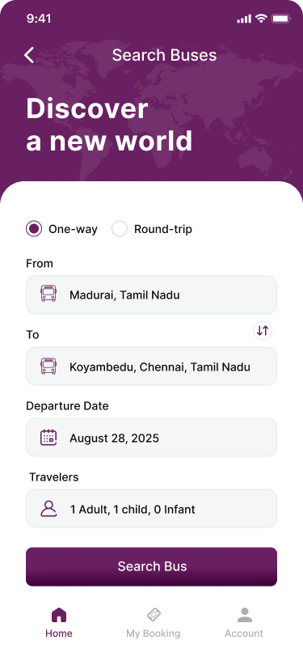
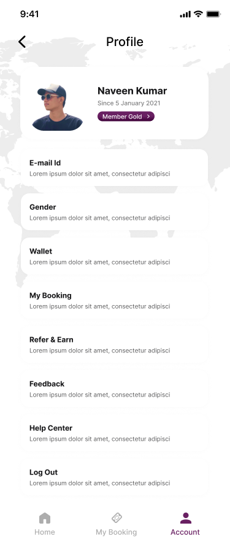
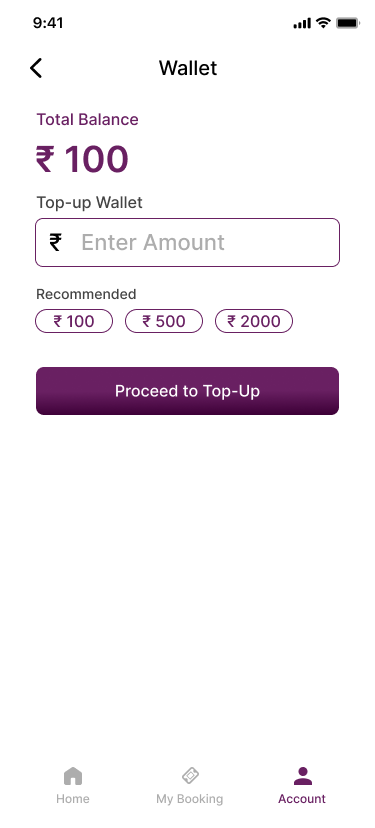
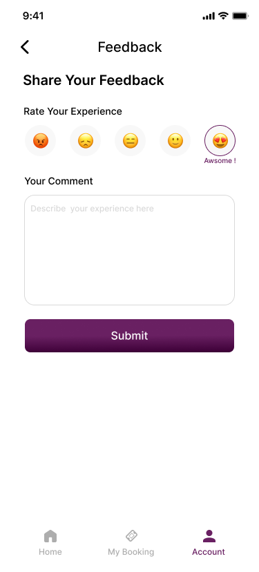

PrimeTrip — Bus Booking Platform
Designing a connected and intuitive bus booking experience.
A Figma-designed bus booking experience focused on route discovery, journey selection, seat selection, passenger details and booking confirmation across responsive web and mobile interfaces.
Client
PrimeTrip
Platform
Bus Booking Platform
Role
UI/UX Design
Focus
Booking · Responsive UI · Mobile

PrimeTrip — bus booking platform designed around a connected traveller journey.
UI/UX
Product experience design
Figma
High-fidelity interface design
Web + Mobile
Responsive booking experience
Booking Flow
Search to confirmation
The brief
PrimeTrip is a bus booking platform designed to help travellers discover routes, compare available journeys, select seats and complete their bookings through a connected digital experience.
My role focused on the UI/UX design of the PrimeTrip booking experience in Figma, covering the key stages of the traveller journey from route discovery through booking completion.
The goal was to create a clear and connected experience where each step gives travellers the information they need to make the next booking decision with confidence.
The challenge
Bus booking involves several decisions in a single journey. Travellers need to enter their route, review available services, understand journey details, choose boarding and dropping points, select a seat, provide passenger information and complete payment.
The interface therefore needed to keep information organised while making the progression between these stages feel simple and predictable.
Booking journey
The PrimeTrip experience was structured around a connected booking journey, where travellers move through a series of decisions from searching for a route to completing their booking.
Each stage was designed to provide the information needed for the next decision while keeping the selected journey and booking context clear.
01
Search
Define the travel route and date.
02
Explore
Review available journeys and options.
03
Select
Choose boarding, dropping and seats.
04
Complete
Enter passenger details and complete payment.

Choose Date — defining the travel date within the booking flow.

Search Result — presenting available journeys for comparison and selection.
Search and journey selection
The booking experience begins by helping travellers define their route and travel date, followed by a clear presentation of available journeys. The interface keeps the search context visible while users review their options.
Choosing the travel date before exploring available journeys.

Route search — the starting point of the PrimeTrip booking journey.
Seat selection
Seat selection is one of the more visual decisions in the booking journey. The interface needs to make seat availability and the current selection easy to understand while keeping the selected journey context visible.

Seat selection — presenting the seating layout as a direct visual decision.

Seat selection states within the booking experience.
Boarding and dropping points
After choosing the journey and seat, travellers need to define where they will board and where they will leave the bus. These selections are kept as distinct steps so the available choices remain easy to scan.

Boarding Point — selecting the preferred boarding location.

Dropping Point — selecting the destination stop.
Passenger details
Once the journey selections are complete, passenger information becomes the next step. The form is structured around the information required to continue the booking while keeping the interaction focused and predictable.

Passenger Details — capturing traveller information before payment.
Payment and booking confirmation
After the traveller has selected the journey, seat, boarding and dropping points, the final stage brings the booking information together before payment.
The payment experience was designed to keep the booking context visible while making the final action clear and easy to understand.

Payment Details — presenting the final booking information before payment.

Payment Successful — clearly communicating completion of the booking process.
Booking details
Once the booking is completed, travellers need a clear way to review their booking information. The booking details experience keeps the relevant journey and transaction information organised for later reference.

Booking Detail — providing access to the completed journey information.

My Bookings — organising previously created bookings in one place.
Transaction and cancellation
Supporting booking interactions extend beyond the initial purchase. PrimeTrip includes interfaces for reviewing transaction information and managing cancellation-related actions.

Transaction Details — keeping payment and booking information accessible.

Cancel Ticket — supporting post-booking ticket management.
Mobile experience
Alongside the responsive booking experience, PrimeTrip includes a mobile journey that introduces travellers to the platform and provides access to the core booking experience through a compact interface.
The mobile screens focus on clear content hierarchy, familiar interaction patterns and focused layouts so important actions remain easy to identify within a smaller viewport.

Onboarding — introducing the PrimeTrip experience.

Onboarding — continuing the mobile introduction.

Onboarding — completing the initial mobile flow.
Access and account experience
The account entry points were designed as part of the wider product experience, providing a clear path for travellers to sign in or create an account before continuing with their activities.

Sign In — a focused entry point for returning travellers.

Sign Up — supporting new account creation within the product experience.
Supporting mobile interactions
Beyond the primary booking journey, the mobile experience also includes supporting areas such as profile, wallet, feedback and referral features. These interfaces extend the product beyond the initial booking transaction.

Profile

Wallet

Feedback

Refer & Earn
Key UX decisions
1. Keep the booking journey connected
The booking experience was treated as one continuous journey rather than a collection of separate screens. Route, date, journey, seat and passenger selections are progressively carried forward so each step has a clear relationship with the previous one.
2. Make travel decisions easy to scan
Travellers need to compare information before choosing a journey. The interface therefore gives important journey details clear visual hierarchy, allowing key information to be identified before moving forward.
3. Use visual interaction for seat selection
Seat selection is inherently spatial, so the interface uses a visual seating layout rather than relying only on text-based choices. Availability and selection states are presented as part of the interaction.
4. Separate complex decisions into focused steps
Boarding points, dropping points, seat selection and passenger information represent different decisions within the same booking. Keeping these stages focused helps prevent the experience from becoming a single overwhelming form.
5. Maintain context through completion
As travellers move towards payment and confirmation, the experience continues to preserve the relevant booking context. This helps connect the final payment stage with the journey and selections made earlier.
6. Extend the experience beyond booking
PrimeTrip also includes areas for viewing bookings, reviewing transaction information and managing post-booking actions. These supporting experiences make the product more than a single-use booking flow.
Good booking UX should make the next decision clear without losing the context of the journey.
Final UI showcase
The final interface brings the PrimeTrip experience together across route discovery, journey selection, seat selection, passenger details, payment and booking management.
Selected PrimeTrip interfaces showing the connected booking experience from discovery through post-booking management.
Outcome
The final PrimeTrip design brings the core bus booking journey into a connected responsive experience, covering route discovery, journey selection, seat selection, passenger information, payment and booking management.
The work establishes a consistent interface direction across the different stages of the product while keeping each interaction focused on the traveller's immediate task.
Reflection
PrimeTrip strengthened my approach to designing multi-step transactional experiences where every screen contributes to a larger journey.
The project reinforced the importance of information hierarchy, progressive decision-making, visual interaction and maintaining context throughout a booking flow.
It also gave me an opportunity to work across responsive web and mobile interfaces while maintaining a consistent product experience.
Interested in creating a clearer digital experience for your users? Get in touch — I'd be happy to discuss your product, platform or service.
More projects


Let's work together
Have a project in mind?
I'm available for UI/UX design, enterprise applications and digital product work. Tell me what you're building and let's discuss how I can help.
Let's talk →